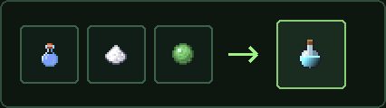

Referência · 0.2.1
Blocos e receitas
Criação de ingredientes a partir dos ficheiros de receitas do mod.
Bancada biológica

- 3 × Vidro
- 5 × Lingote de Ferro
- 1 × Mesa de Trabalho
Fluido carreador

- 1 × Poção
- 1 × Açúcar
- 1 × Bola de Slime
Catalisador

- 1 × Fungo do Nether
- 1 × Quartzo do Nether
Centrífuga

- 5 × Lingote de Ferro
- 2 × Vidro
- 1 × Pó de Redstone
- 1 × Fornalha
Seringa de ouro

- 1 × Seringa
- 3 × Lingote de Ouro
- 1 × Pó de Redstone
Base mutagênica

- 1 × Fluido carreador
- 1 × Frasco Encantado
Seringa de netherita

- 1 × Seringa de ouro
- 2 × Fragmentos de Netherite
Soro de reversão

- 1 × Fluido carreador
- 1 × Olho de Aranha Fermentado
Sequenciador

- 4 × Lingote de Ferro
- 2 × Vidro
- 1 × Comparador de Redstone
- 1 × Telescópio
Estabilizador

- 1 × Fluido carreador
- 1 × Pó de Pedra Luminosa
Sintetizador

- 4 × Lingote de Ferro
- 3 × Vidro
- 1 × Fermentador
- 1 × Pó de Redstone
Seringa

- 1 × Frasco de Vidro
- 1 × Lingote de Ferro
- 1 × Pepita de Ferro